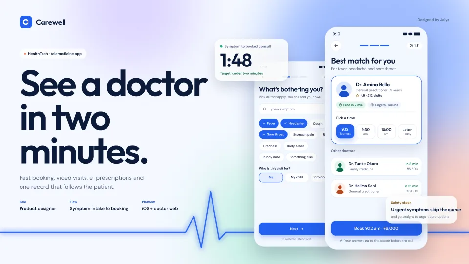
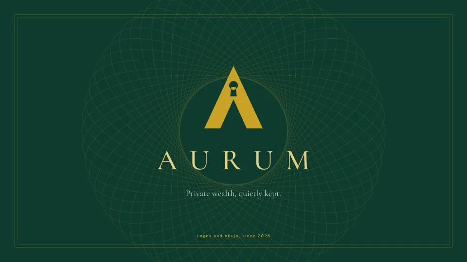
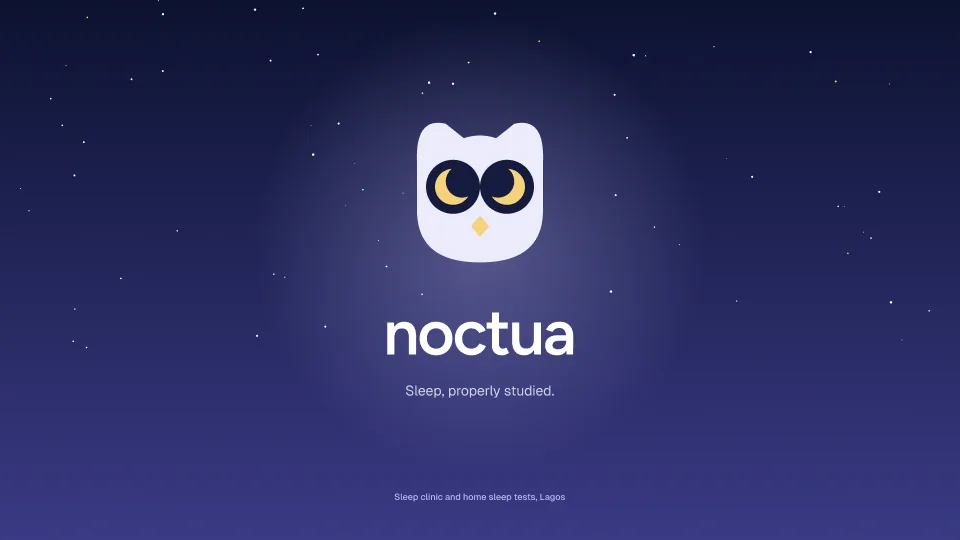
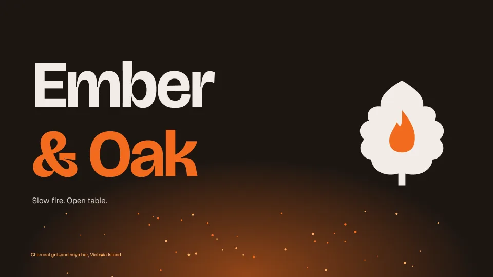
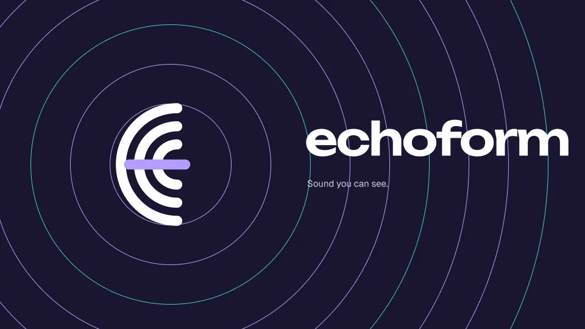
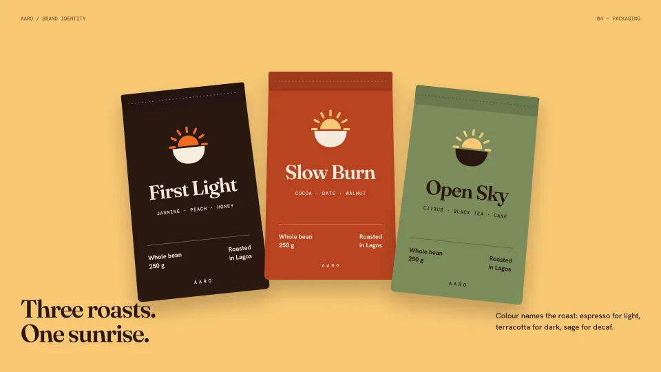
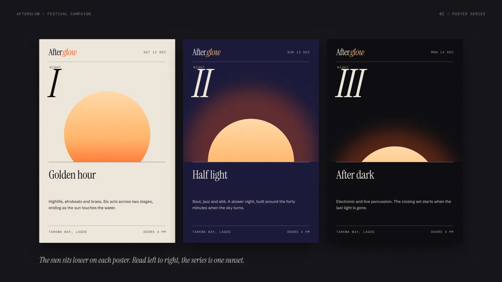
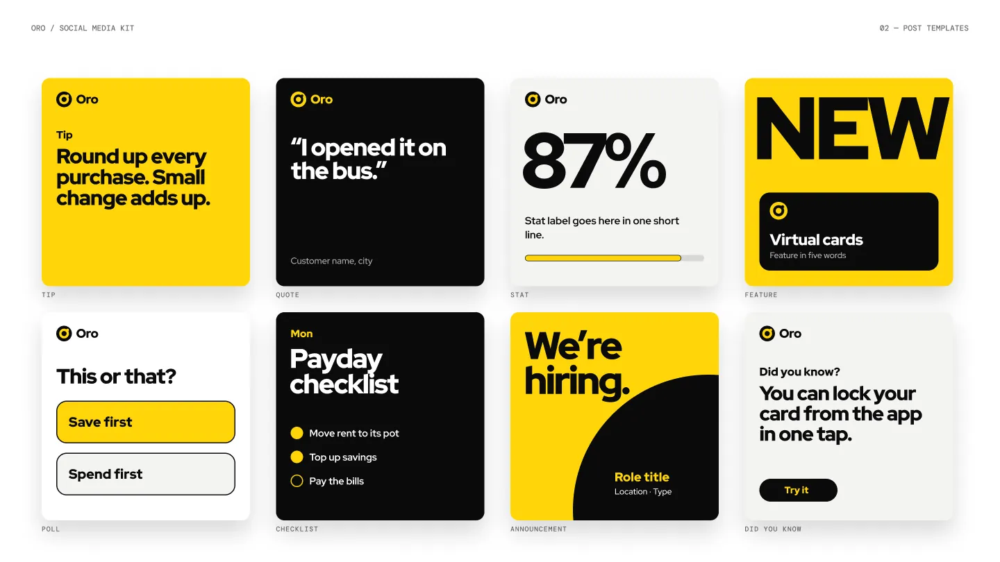

All work
Every project, sorted by what it is.
24 projects across product design, websites, PRDs, brand and game UI, plus a motion reel. Each one has its own page with the real screens.
Product design
8Apps and dashboards, each built around one hard problem.
 DaticksValidate your data skills. Prove you're job-ready.Edtech
DaticksValidate your data skills. Prove you're job-ready.Edtech StazaA marketplace that holds your money until delivery.E-commerce
StazaA marketplace that holds your money until delivery.E-commerce HaulrSee the delay before the customer does.Logistics
HaulrSee the delay before the customer does.Logistics LedgerlyGet paid from abroad. Know every cost first.Fintech
LedgerlyGet paid from abroad. Know every cost first.Fintech StackwiseNever learn alone. Always know the next step.Edtech
StackwiseNever learn alone. Always know the next step.Edtech KasuwaMany makers. One parcel.Marketplace
KasuwaMany makers. One parcel.Marketplace FanfareCreator marketing, measured to the last dollar.SaaS
FanfareCreator marketing, measured to the last dollar.SaaS
CarewellSee a doctor in two minutes.HealthtechWebsites
5Landing pages that make one idea impossible to miss.
PRDs & decks
2Product docs and pitch decks that teams and investors can act on.
Brand & campaigns
7Marks, type, colour and campaigns, each with a reason behind it.

AurumPrivate wealth, quietly kept.Wealth
NoctuaSleep, properly studied.Health
Ember & OakSlow fire. Open table.Restaurant
EchoformSound you can see.Audio
AaroThree roasts. One sunrise.Coffee
AfterglowThree nights. One sunset.Campaign
Oro social kitTemplates a bank's team can post every day.SocialGame UI
2HUDs, menus and game loops that keep players in the match.
Motion
1A reel of the work in motion, with an original soundtrack.